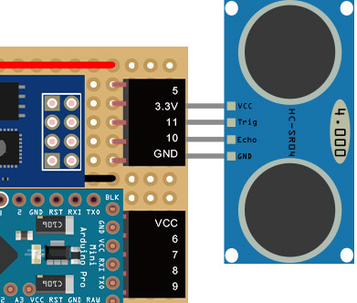
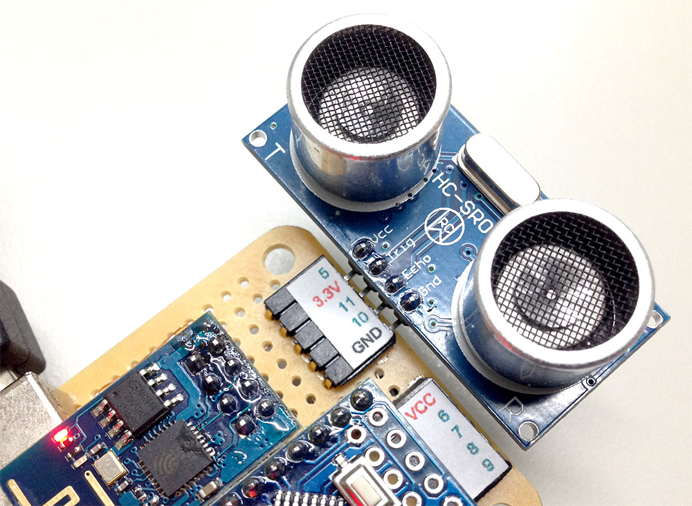
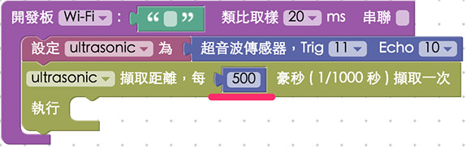
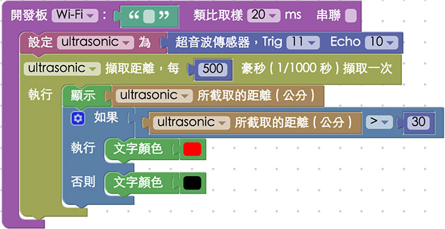

教學範例 5：控制超音波傳感器
超音波傳感器顧名思義就是會發送超音波，藉由超音波碰撞到物體之後反射回來的時間差，就可以計算超音波傳感器與相對應物體之間的距離，在這個範例裡頭使用的超音波傳感器 HC-SR04 上頭有兩個類似喇叭的裝置，其中一個是 Trig，負責發送超音波，另外一個是 Echo，負責接收反射回來的超音波，最後會得到一個單位為「公分」的數值，就是超音波傳感器與待測物體之間的距離，不過因為超音波有指向性，如果今天受測的物體是傾斜的，超音波可能就會被反彈到別的地方，或是今天待測物會吸收聲波，可能測出來的距離就會有不準確的情形發生。
範例影片展示
影片對應範例：http://blockly.webduino.io/?page=tutorials/ultrasonic-1
接線與實作
我們使用的超音波傳感器的型號為 HC-SR04，接線的方式只要將 VCC 接在 3.3v 或 VCC 的位置，GND 接在 GND 的位置，Trig 和 Echo 接在數字腳位上即可。( 在這篇我們將 Trig 接在 11，Echo 接在 10 )
接線示意圖：

實際接線照片：

Webduino Blockly 操作解析
打開 Webduino Blockly 編輯工具 ( http://blockly.webduino.io )，因為這個範例也會點選網頁「顯示文字」來顯示超音波傳感器偵測到的數值，所以要先點選右上方「網頁互動測試」的按鈕，打開內嵌測試的網頁，用下拉選單選擇「顯示文字」，就會出現一個文字區域，我們也會將超音波所測得的距離顯示在這邊。

待會在左側工具列會用到「顯示文字」相關的積木，我們可以設定顯示文字的大小、顏色、行高。

把開發板放到編輯畫面裡，填入對應的 Webduino 開發板名稱，開發板內放入超音波積木，名稱設定為 ultrasonic，腳位設定為 Trig 11，Echi 10，接著放入每 500 毫秒偵測一次的積木。(建議設定 200 毫秒以上)

最後就是把顯示的數值，顯示在網頁裡頭。

當然這邊你也可以做點變化，利用「邏輯」的積木，讓距離大於 30 公分的時候，文字顏色會變成紅色。

完成後，確認開發板上線 ( 點選「檢查連線狀態」查詢 )，點選紅色的執行按鈕，用手或是遮蔽物在超音波傳感器前後晃動，就會看到右側的網頁文字變成距離數值而且會變色了。 ( 解答：http://blockly.webduino.io/#-K4x-T2x2FErHgjUUTem )
程式碼解析 ( 完整程式碼、檢查連線狀態)
HTML 的 header 引入 webduino-all.min.js，目的在讓瀏覽器可以支援 WebComponents 以及 Webduino 所有的元件，如果是用 Blockly 編輯工具產生的程式碼，則要額外引入 webduino-blockly.js。
<script src="https://webduino.io/components/webduino-js/dist/webduino-all.min.js"></script>
<script src="http://webduinoio.github.io/webduino-blockly/webduino-blockly.js"></script>
因為只有顯示文字，所以在 HTML 裏頭只有放入一個 span 來顯示文字而已。
<span id="demo-area-01-show">要顯示的文字</span>
JavaScript 的部分使用了 ping 這個超音波傳感器的偵測方法，裡面是一個帶有一個參數的函式，這個參數就是偵測到的距離 ( 也可以用 .distance 屬性來表示 )，然後我們只要用一個 if 和 else 的判斷，就可以在不同距離，顯示不同文字顏色。
var ultrasonic;
boardReady('開發板名稱', function (board) {
board.samplingInterval = 20;
ultrasonic = getUltrasonic(board, 11, 10);
ultrasonic.ping(function(cm){
console.log(ultrasonic.distance);
document.getElementById("demo-area-01-show").innerHTML = ultrasonic.distance;
if (ultrasonic.distance > 30) {
document.getElementById("demo-area-01-show").style.color = '#ff0000';
} else {
document.getElementById("demo-area-01-show").style.color = '#000000';
}
}, 500);
});
因為是 Blockly 工具產生，有些重複的代碼，我們可以用一個變數來表示，將其簡化，讓程式碼看起來更乾淨。
var ultrasonic;
var show;
boardReady('開發板名稱', function (board) {
board.samplingInterval = 20;
ultrasonic = getUltrasonic(board, 11, 10);
show = document.getElementById("demo-area-01-show");
ultrasonic.ping(function(cm){
console.log(ultrasonic.distance);
show.innerHTML = ultrasonic.distance;
if (ultrasonic.distance > 30) {
show.style.color = '#ff0000';
} else {
show.style.color = '#000000';
}
}, 500);
});
以上就是利用超音波傳感器，偵測並顯示距離的範例。
完整程式碼：http://bin.webduino.io/sane/edit?html,css,js,output
解答：http://blockly.webduino.io/#-K4x-T2x2FErHgjUUTem
超音波傳感器的延伸教學：
Webduino Blockly 課程 3-1：超音波傳感器
如果您還想了解更多，可以參考：
2. Blockly 教學：https://goo.gl/Y8sRkl
3. 產品總覽：https://webduino.io/buy.html
4. 露天賣場：http://goo.gl/0Dj9ip